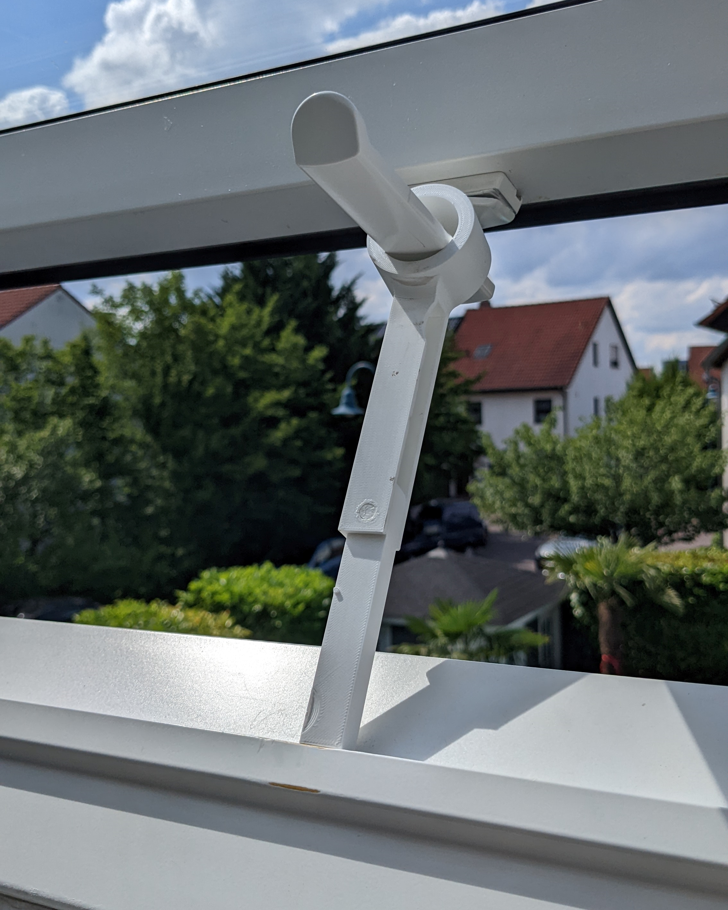
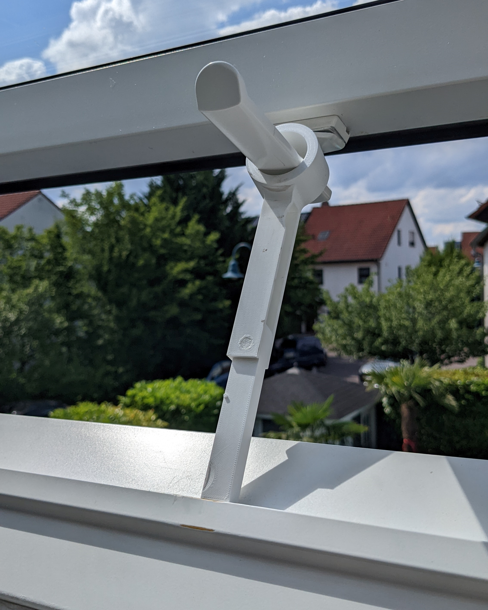

Dachfenster Halterung
Projektbeschreibung
Die Dachfenster am Haus meiner Eltern sind für den Winkel der Dachschräge falsch dimensioniert und lassen sich nicht so einstellen, dass sie von selbst offen bleiben. Zum Lüften haben wir deshalb jahrelang Gegenstände dazwischengeklemmt, die gelegentlich auch mal nach außen rausgefallen sind. Deshalb habe ic irgendwann dieses Tool 3d-gedruckt, das man an den Griff des Fensters hängen kann. Es lässt sich außerdem wie ein Taschenmesser aufklappen, sodass es zwei Öffnungsstufen ermöglicht. Die ausklappbare Verlängerung ist über ein Langloch befestigt, sodass sie im ausgeklappten Zustand unter Druck "einrastet" und nicht aus Versehen von selbst wieder einklappt. Sie ist auch gegen versehentliches Ausklappen gesichert.